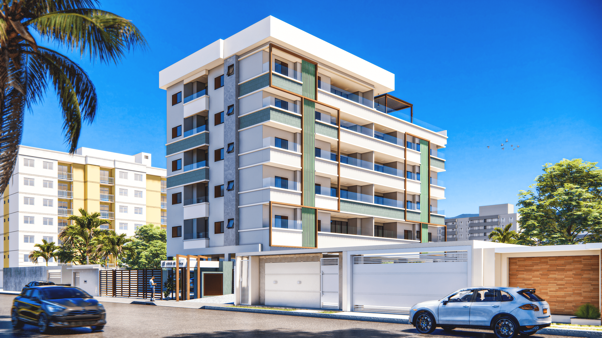
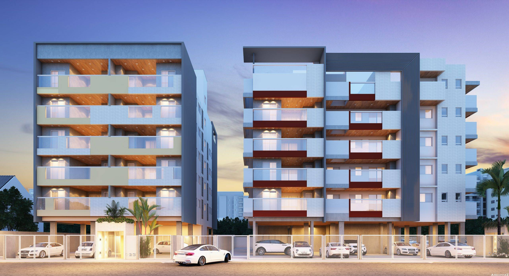
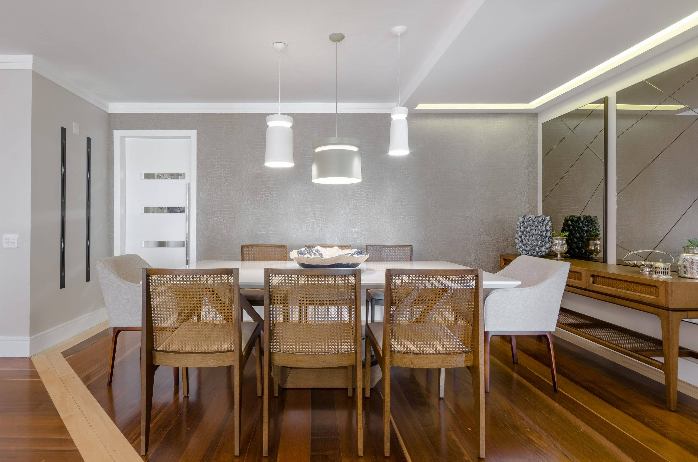

Arquitetura e Sustentabilidade
Arquitetura orientada por desempenho e propósito.
Há mais de duas décadas, a Carol Magno Arquitetura desenvolve projetos residenciais, comerciais e edifícios, conectando técnica, funcionalidade e sustentabilidade para criar soluções coerentes com o uso, o contexto e o futuro de cada edificação.
Seja muito bem-vindo!
Qualidade, sustentabilidade e detalhamento de projeto.
Buscamos reproduzir o sonho do cliente com sofisticação, funcionalidade e bom desempenho, através do uso de tecnologia Bim e premissas sustentáveis. Nossa equipe é formada por arquitetos e designers de interiores aptos para oferecer suporte total em cada etapa de projeto.
Em cada trabalho, consideramos as características do local e suas condições bioclimáticas, buscando aproveitar estratégias de iluminação natural, ventilação e conforto térmico de forma coerente com a arquitetura.
Valorizamos as condições de conforto térmico, acústico e lumínico da sua edificação, utilizando análises computacionais para garantir um desempenho adequado.
Focos do site
Projetos, sustentabilidade e estudos de viabilidade integrados às galerias.

Premissas
Decisões que equilibram uso, desempenho e sustentabilidade desde o início.
- Contexto e viabilidadeCada projeto parte da leitura do terreno, da legislação, do entorno e das necessidades de quem vai utilizar o espaço.
- Conforto e desempenhoIluminação, ventilação, conforto térmico, acústico e lumínico são considerados desde as primeiras decisões.
- Materiais e durabilidadeA especificação considera desempenho, manutenção, vida útil e adequação de cada material ao projeto.
- Sustentabilidade e eficiênciaEstratégias para reduzir impactos, otimizar o consumo de água e energia e melhorar o desempenho da edificação ao longo do tempo.